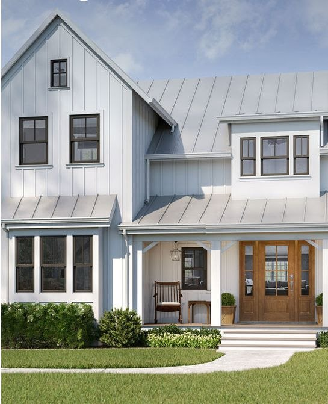

01 · INTERIORS
Declutter & Simplify
Clear counters, edit furniture and organize storage so buyers can appreciate the size and flow of each room. Pack away very personal items while keeping the home warm and inviting.
Make your first impression count. Thoughtful preparation helps buyers connect with your property from the first photograph through the final showing.
Our team helps you focus on practical, high-impact improvements that present your home's strongest qualities without unnecessary spending.
TALK ABOUT SELLING →
Every property is different. These preparation ideas help make spaces feel clean, inviting and move-in ready, while highlighting the features that make your home special.
Clear counters, edit furniture and organize storage so buyers can appreciate the size and flow of each room. Pack away very personal items while keeping the home warm and inviting.

Arrange furnishings to define each room, maximize natural light and create a welcoming, comfortable atmosphere. Thoughtful staging helps potential buyers imagine themselves living there.

Keep the lawn tidy, trim shrubs, sweep the walkway and add simple seasonal touches. A clean entryway and well-kept exterior can set a positive tone before buyers step inside.
Clean windows, turn on lights, clear surfaces and make each space camera-ready. We coordinate the presentation with your marketing plan so the home is shown consistently and professionally.
Small, thoughtful steps can make a meaningful difference. Your agent can help tailor the plan to your home's condition and your budget.
Complete basic touch-ups, replace burnt-out bulbs and take care of visible minor repairs.
Open blinds, maximize natural light and simplify room layouts to showcase dimensions.
Have a routine for cleaning, securing valuables and making the home welcoming for visitors.
Connect with Scialdoni Realty to build a preparation plan around your property and goals.
REQUEST A SELLER CONSULTATION →